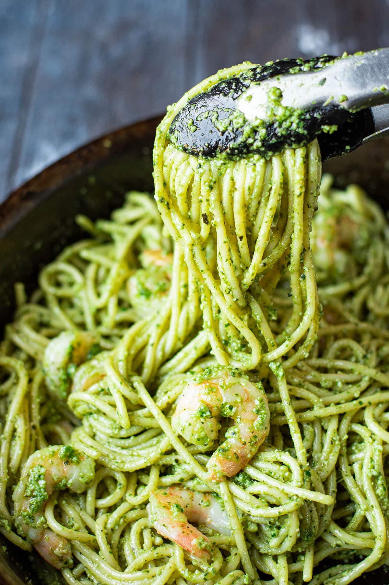

Pesto Pasta
Return to Main Page

Description
Our Ultimate Pesto Pasta is a vibrant and aromatic dish that features
al dente pasta tossed in a rich and creamy homemade basil pesto sauce.
Garnished with grated Parmesan cheese, pine nuts, and fresh basil leaves,
this quick and easy recipe is perfect for a light lunch or dinner.
Ingredients
- 12 oz pasta (spaghetti, fettuccine, or your favorite)
- 2 cups fresh basil leaves
- 1/2 cup grated Parmesan cheese
- 1/3 cup pine nuts
- 2 cloves garlic
- 1/2 cup extra-virgin olive oil
- Salt and pepper, to taste
- 1/2 cup cherry tomatoes (optional, for garnish)
- Fresh basil leaves (optional, for garnish)
- Pine nuts (optional, for garnish)
Instructions
-
Cook the Pasta:
- Bring a large pot of salted water to a boil. Add the pasta and cook according to package instructions until al dente. Drain the pasta, reserving 1/2 cup of the pasta water.
-
Prepare the Pesto:
- In a food processor, combine the basil leaves, grated Parmesan, pine nuts, and garlic. Pulse until finely chopped.
- With the food processor running, slowly drizzle in the olive oil until the mixture becomes smooth and creamy. Season with salt and pepper to taste.
-
Toss the Pasta:
- In a large mixing bowl, toss the cooked pasta with the pesto sauce. If needed, add a bit of the reserved pasta water to achieve the desired consistency.
-
Garnish and Serve:
- Transfer the pesto pasta to serving plates. Garnish with cherry tomatoes, fresh basil leaves, and extra pine nuts if desired.
- Finish with a sprinkle of Parmesan cheese and a drizzle of olive oil. Serve immediately.